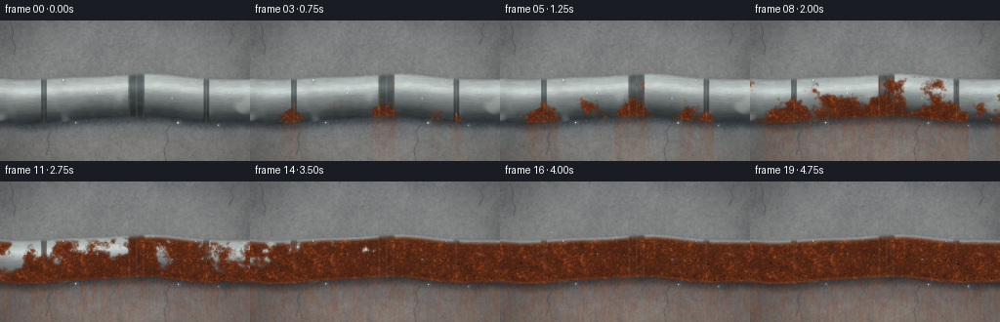
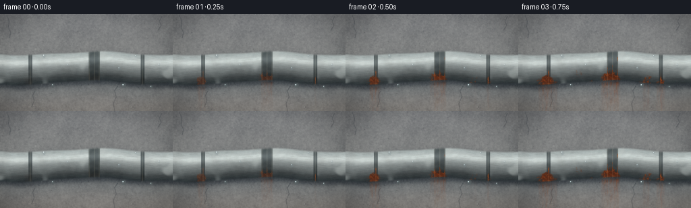

CODING AGENTS AS PIXEL WORLD MODELS
traex/DeepSeek-V4.1-Flash · material_0048
点击播放 · 原生 RGB 像素
此结果可播放，但该运行尚未通过最终提交审核。页面展示不代表评测通过。
逐轮保存的候选
回放视频、检查图与代码变化。
每份候选均可单独播放。实际图片检查记录在下方工具轨迹中。
候选 01播放与检查图
点击播放 · 原生 RGB 像素


展开代码变化
--- 上一保存版本
+++ 本次保存版本
@@ -0,0 +1,439 @@
+from pathlib import Path
+
+import cv2
+import numpy as np
+from PIL import Image
+from scipy.ndimage import gaussian_filter
+
+import artifact_io
+
+
+CASE_DIR = Path(__file__).resolve().parent
+W, H = 256, 144
+SS = 3
+RW, RH = W * SS, H * SS
+N, FPS = 20, 4.0
+RNG = np.random.default_rng(48071)
+
+
+def normalized(field):
+ lo, hi = np.percentile(field, (1.0, 99.0))
+ return np.clip((field - lo) / max(hi - lo, 1e-6), 0.0, 1.0)
+
+
+def smooth_noise(shape, sigma, seed=None):
+ rng = np.random.default_rng(seed) if seed is not None else RNG
+ return normalized(gaussian_filter(rng.random(shape), sigma, mode="reflect"))
+
+
+def fbm(shape, base_sigma, octaves=4, seed=1):
+ rng = np.random.default_rng(seed)
+ result = np.zeros(shape, np.float32)
+ total = 0.0
+ sigma = float(base_sigma)
+ for octave in range(octaves):
+ layer = gaussian_filter(rng.random(shape), sigma, mode="reflect")
+ result += normalized(layer) * (0.58 ** octave)
+ total += 0.58 ** octave
+ sigma = max(0.75, sigma * 0.48)
+ return result / total
+
+
+def smoothstep(a, b, value):
+ t = np.clip((value - a) / np.maximum(b - a, 1e-6), 0.0, 1.0)
+ return t * t * (3.0 - 2.0 * t)
+
+
+def ellipse_mask(cx, cy, rx, ry, softness=1.2):
+ yy, xx = np.ogrid[:RH, :RW]
+ distance = ((xx - cx) / max(rx, 0.1)) ** 2 + ((yy - cy) / max(ry, 0.1)) ** 2
+ return np.clip((1.0 - distance) * min(rx, ry) / max(softness, 0.1) + 0.5, 0.0, 1.0)
+
+
+def draw_soft_line(mask, points, color=1.0, thickness=1, blur=0.65):
+ pts = np.asarray(points, np.int32)
+ cv2.polylines(mask, [pts], False, float(color), thickness, cv2.LINE_AA)
+ return gaussian_filter(mask, blur)
+
+
+def make_wall_texture():
+ broad = fbm((RH, RW), 44.0, 4, seed=11)
+ mid = fbm((RH, RW), 12.0, 4, seed=12)
+ fine = smooth_noise((RH, RW), 2.3, seed=13)
+ grain = RNG.normal(0.0, 1.0, (RH, RW)).astype(np.float32)
+ grain = gaussian_filter(grain, 0.55)
+
+ base = np.empty((RH, RW, 3), np.float32)
+ base[..., 0] = 103.0 + 22.0 * broad + 8.0 * mid
+ base[..., 1] = 105.0 + 21.0 * broad + 8.0 * mid
+ base[..., 2] = 103.0 + 19.0 * broad + 7.0 * mid
+ base += (fine[..., None] - 0.5) * np.array([13.0, 13.0, 12.0])
+ base += grain[..., None] * 3.2
+
+ # Cool, damp concrete near the top, with warm reflected light below.
+ yy, xx = np.mgrid[0:RH, 0:RW].astype(np.float32)
+ base[..., 2] += (1.0 - yy / RH) * 5.0
+ base[..., 0] += smoothstep(0.55, 0.98, yy / RH) * 4.0
+
+ # Aggregate pores and small chips.
+ speckle = np.zeros((RH, RW), np.float32)
+ for _ in range(900):
+ px = int(RNG.integers(0, RW))
+ py = int(RNG.integers(0, RH))
+ radius = int(RNG.choice([0, 1, 1, 1, 2, 3]))
+ shade = float(RNG.uniform(-1.0, 0.8))
+ cv2.circle(speckle, (px, py), radius, shade, -1, cv2.LINE_AA)
+ speckle = gaussian_filter(speckle, 0.45)
+ base += speckle[..., None] * np.array([15.0, 15.0, 14.0])
+
+ # Hairline fractures in the concrete.
+ cracks = np.zeros((RH, RW), np.float32)
+ crack_paths = [
+ [(28, 4), (38, 31), (34, 54), (45, 80), (40, 102)],
+ [(717, 8), (706, 29), (714, 48), (700, 69)],
+ [(520, 318), (507, 339), (514, 367), (501, 397), (508, 432)],
+ [(152, 342), (143, 359), (149, 385), (138, 410)],
+ ]
+ for path in crack_paths:
+ draw_soft_line(cracks, path, 1.0, 2, 0.75)
+ dark_cracks = gaussian_filter(np.roll(cracks, (2, 2), axis=(0, 1)), 1.2)
+ base -= dark_cracks[..., None] * np.array([31.0, 29.0, 26.0])
+ base += cracks[..., None] * np.array([4.0, 4.0, 3.5])
+
+ # Soft photographic vignette.
+ vignette = np.clip(1.15 - 0.36 * (((xx - RW / 2) / (RW * 0.66)) ** 2 + ((yy - RH / 2) / (RH * 0.72)) ** 2), 0.72, 1.04)
+ base *= vignette[..., None]
+ return base.astype(np.float32)
+
+
+def pipe_geometry():
+ yy, xx = np.mgrid[0:RH, 0:RW].astype(np.float32)
+ xnorm = xx / RW
+ center = 0.555 * RH + 8.5 * np.sin(xnorm * 2.45 * np.pi + 0.55) + 2.2 * np.sin(xnorm * 5.7 * np.pi)
+ radius = 0.166 * RH + 1.7 * np.sin(xnorm * 3.3 * np.pi + 0.2)
+ center_slope = np.gradient(center, axis=1)
+ return xx, yy, center, radius, center_slope
+
+
+def make_pipe_layers(xx, yy, center, radius, center_slope):
+ d = yy - center
+ q = np.clip(d / radius, -1.15, 1.15)
+ inside = smoothstep(-0.985, -0.82, q) * (1.0 - smoothstep(0.82, 0.985, q))
+ nz = np.sqrt(np.clip(1.0 - np.clip(q, -1.0, 1.0) ** 2, 0.0, 1.0))
+ slope = np.clip(center_slope / RW, -0.1, 0.1)
+ nx = -slope * np.ones_like(q)
+ normal = np.stack((nx, q, nz), axis=-1)
+ normal /= np.maximum(np.linalg.norm(normal, axis=2, keepdims=True), 1e-6)
+
+ light = np.array([-0.46, -0.72, 0.52], np.float32)
+ light /= np.linalg.norm(light)
+ diffuse = np.clip(np.sum(normal * light, axis=2), 0.0, 1.0)
+ half = light + np.array([0.0, 0.0, 1.0], np.float32)
+ half /= np.linalg.norm(half)
+ spec = np.clip(np.sum(normal * half, axis=2), 0.0, 1.0) ** 34
+ broad_spec = np.clip(np.sum(normal * half, axis=2), 0.0, 1.0) ** 7
+
+ spangle = smooth_noise((RH, RW), 18.0, seed=21)
+ spangle2 = smooth_noise((RH, RW), 5.5, seed=22)
+ brushed = gaussian_filter(RNG.normal(0.0, 1.0, (RH, RW)).astype(np.float32), (0.55, 7.5))
+ brushed = normalized(brushed)
+ fine = smooth_noise((RH, RW), 1.2, seed=23)
+
+ zinc = np.empty((RH, RW, 3), np.float32)
+ zinc[..., 0] = 151.0
+ zinc[..., 1] = 158.0
+ zinc[..., 2] = 157.0
+ zinc += (spangle[..., None] - 0.5) * np.array([22.0, 24.0, 24.0])
+ zinc += (spangle2[..., None] - 0.5) * np.array([10.0, 10.0, 9.0])
+ zinc += (brushed[..., None] - 0.5) * np.array([17.0, 18.0, 18.0])
+ zinc += (fine[..., None] - 0.5) * 5.0
+
+ illumination = 0.50 + 0.57 * diffuse
+ zinc *= illumination[..., None]
+ zinc += (spec * 112.0 + broad_spec * 23.0)[..., None] * np.array([1.0, 0.98, 0.92])
+ zinc += np.clip(-q, 0.0, 1.0)[..., None] ** 2 * np.array([13.0, 14.0, 13.0])
+ zinc -= np.clip(q, 0.0, 1.0)[..., None] ** 1.8 * np.array([37.0, 34.0, 31.0])
+
+ # A pale mineral film and occasional galvanized spangle boundaries.
+ film = smoothstep(0.62, 0.88, spangle) * 0.45
+ zinc = zinc * (1.0 - film[..., None]) + np.array([176.0, 181.0, 177.0]) * film[..., None]
+
+ return d, q, inside, normal, diffuse, spec, zinc, spangle, spangle2, fine
+
+
+def hardware_masks(xx, yy, center, radius):
+ coupling_x = 0.545 * RW
+ coupling_half = 25.0
+ coupling = (1.0 - smoothstep(coupling_half - 2.0, coupling_half + 1.5, np.abs(xx - coupling_x)))
+ coupling *= (np.abs(yy - center) < radius + 8.0)
+
+ clamps = np.zeros((RH, RW), np.float32)
+ for cx in (0.175 * RW, 0.825 * RW):
+ band = 1.0 - smoothstep(7.0, 10.0, np.abs(xx - cx))
+ band *= (np.abs(yy - center) < radius + 5.0)
+ clamps = np.maximum(clamps, band)
+
+ seams = np.zeros((RH, RW), np.float32)
+ seams = np.maximum(seams, np.exp(-((xx - coupling_x) / 1.35) ** 2))
+ seams = np.maximum(seams, np.exp(-((xx - (coupling_x - coupling_half + 3.0)) / 1.5) ** 2))
+ seams = np.maximum(seams, np.exp(-((xx - (coupling_x + coupling_half - 3.0)) / 1.5) ** 2))
+ for cx in (0.175 * RW, 0.825 * RW):
+ seams = np.maximum(seams, np.exp(-((xx - cx) / 1.6) ** 2))
+ seams *= (np.abs(yy - center) < radius + 9.0)
+ return coupling, clamps, seams, coupling_x, coupling_half
+
+
+def make_moisture_layers():
+ yy, xx = np.mgrid[0:RH, 0:RW].astype(np.float32)
+ beads = []
+ specs = [
+ (0.255, 0.43, 7.5, 9.0),
+ (0.390, 0.52, 5.0, 6.5),
+ (0.465, 0.38, 4.2, 5.2),
+ (0.690, 0.56, 6.8, 8.0),
+ (0.785, 0.43, 4.8, 5.8),
+ (0.605, 0.33, 3.6, 4.3),
+ (0.920, 0.52, 5.3, 7.0),
+ ]
+ for idx, (fx, fy, rx, ry) in enumerate(specs):
+ cx = fx * RW
+ cy = fy * RH
+ mask = ellipse_mask(cx, cy, rx, ry, 0.9)
+ highlight = ellipse_mask(cx - rx * 0.34, cy - ry * 0.38, rx * 0.25, ry * 0.20, 0.55)
+ shadow = ellipse_mask(cx + rx * 0.22, cy + ry * 0.30, rx * 0.65, ry * 0.65, 1.3) * (1.0 - mask)
+ beads.append((mask, highlight, shadow, idx))
+
+ # Larger drops suspended from the underside.
+ hanging = []
+ for idx, (fx, size, phase) in enumerate([(0.305, 9.0, 0.1), (0.715, 11.0, 1.7), (0.875, 7.5, 2.8)]):
+ hanging.append((fx, size, phase, idx))
+ return beads, hanging
+
+
+def make_rust_fields(xx, yy, center, radius, d, q, seams, coupling_x, coupling_half):
+ coarse = fbm((RH, RW), 24.0, 5, seed=31)
+ medium = fbm((RH, RW), 7.0, 4, seed=32)
+ fine = fbm((RH, RW), 2.1, 3, seed=33)
+ blotch = smooth_noise((RH, RW), 38.0, seed=34)
+ vertical = gaussian_filter(RNG.random((RH, RW)).astype(np.float32), (8.0, 1.4))
+ vertical = normalized(vertical)
+
+ xnorm = xx / RW
+ underside = np.clip((d / radius + 0.10) / 1.05, 0.0, 1.0) ** 0.78
+ seam_score = np.clip(seams * 1.45 + np.exp(-((xx - coupling_x) / (coupling_half * 0.72)) ** 2) * 0.23, 0.0, 1.0)
+ score = 0.50 * coarse + 0.18 * medium + 0.15 * underside + 0.13 * seam_score + 0.04 * fine
+
+ # A few early bloom centers keep the first visible corrosion localized.
+ centers = [
+ (0.545 * RW, 0.62 * RH, 44.0, 0.28),
+ (0.175 * RW, 0.67 * RH, 34.0, 0.19),
+ (0.825 * RW, 0.64 * RH, 38.0, 0.17),
+ (0.38 * RW, 0.71 * RH, 52.0, 0.16),
+ (0.73 * RW, 0.67 * RH, 46.0, 0.13),
+ ]
+ bloom = np.zeros((RH, RW), np.float32)
+ for cx, cy, sigma, strength in centers:
+ bloom = np.maximum(bloom, np.exp(-((xx - cx) ** 2 + (yy - cy) ** 2) / (2.0 * sigma ** 2)) * strength)
+ score = score + bloom
+ score = normalized(score)
+
+ rust_mottle = 0.56 * medium + 0.28 * coarse + 0.16 * fine
+ relief = np.gradient(gaussian_filter(fine, 1.2))
+ relief_light = np.clip(-relief[0] * 0.72 - relief[1] * 0.46, -1.0, 1.0)
+ return score, rust_mottle, fine, blotch, vertical, relief_light
+
+
+def wall_with_environment(wall, center, radius, inside, age):
+ yy, xx = np.mgrid[0:RH, 0:RW].astype(np.float32)
+ # Contact shadow and damp halo around the pipe.
+ shadow_src = gaussian_filter(inside, 9.0)
+ shadow = np.roll(shadow_src, (18, 10), axis=(0, 1))
+ wall -= shadow[..., None] * np.array([58.0, 55.0, 50.0])
+
+ halo = np.exp(-((yy - (center + radius * 1.25)) / (radius * 0.72)) ** 2)
+ damp = np.zeros((RH, RW), np.float32)
+ damp = gaussian_filter(halo * (0.34 + 0.30 * age), (10.0, 4.0))
+ wall *= (1.0 - damp[..., None] * np.array([0.23, 0.18, 0.14]))
+ wall -= damp[..., None] * np.array([12.0, 8.0, 5.0])
+ return wall
+
+
+def add_rust_streaks(frame, wall, rust_amt, inside, center, radius, age, vertical, rust_mottle):
+ yy, xx = np.mgrid[0:RH, 0:RW].astype(np.float32)
+ source_slice = np.clip(center[0] + radius[0] * 0.76, 0, RH - 1).astype(np.int32)
+ columns = np.arange(RW)
+ bottom = np.array([rust_amt[min(int(source_slice[x]), RH - 1), x] for x in columns], np.float32)
+ bottom = gaussian_filter(bottom, 3.2)
+ column_texture = normalized(gaussian_filter(RNG.random(RW).astype(np.float32), 2.4))
+ source = np.clip(bottom * (0.42 + 0.88 * column_texture), 0.0, 1.0)[None, :]
+
+ below = np.clip(yy - (center + radius * 0.88), 0.0, None)
+ length = radius * (0.78 + 1.65 * age)
+ falloff = np.exp(-below / np.maximum(length, 1.0))
+ broken = smoothstep(0.28, 0.85, vertical)
+ streak = source * falloff * (0.45 + 0.75 * broken)
+ streak *= smoothstep(0.0, radius * 0.22, below)
+
+ wet_dark = streak[..., None] * np.array([26.0, 20.0, 15.0])
+ rust_tint = streak[..., None] * np.array([90.0, 38.0, 12.0])
+ frame -= wet_dark
+ frame = frame * (1.0 - np.clip(streak[..., None] * 0.30, 0.0, 0.65))
+ frame += rust_tint * (0.45 + 0.55 * rust_mottle[..., None])
+ return frame
+
+
+def render_frame(index, wall_base, geometry, pipe_layers, hardware, moisture, rust_fields, bead_variation):
+ xx, yy, center, radius, center_slope = geometry
+ d, q, inside, normal, diffuse, spec, zinc, spangle, spangle2, fine = pipe_layers
+ coupling, clamps, seams, coupling_x, coupling_half = hardware
+ score, rust_mottle, rust_fine, blotch, vertical, relief_light = rust_fields
+ beads, hanging = moisture
+
+ age = index / (N - 1)
+ rust_threshold = 1.035 - 1.33 * age
+ rust_amt = smoothstep(rust_threshold - 0.055, rust_threshold + 0.12, score)
+ rust_amt *= inside
+ rust_amt *= smoothstep(-0.98, -0.72, q)
+
+ # Keep a few darker, older patches that grow more slowly than the bloom front.
+ old_rust = smoothstep(0.67 - 0.78 * age, 0.76 - 0.70 * age, blotch + 0.16 * rust_fine)
+ rust_amt = np.clip(rust_amt * (0.87 + 0.13 * old_rust), 0.0, 1.0)
+
+ frame = wall_base.copy()
+ frame = wall_with_environment(frame, center, radius, inside, age)
+ frame = add_rust_streaks(frame, wall_base, rust_amt, inside, center, radius, age, vertical, rust_mottle)
+
+ # Zinc surface, with a damp darkening that is strongest in the beginning.
+ moisture_level = 0.19 + 0.05 * np.sin(age * np.pi * 1.4)
+ pipe_col = zinc * (1.0 - moisture_level) + zinc * np.array([0.83, 0.88, 0.90]) * moisture_level
+ wet_spec = spec * (1.0 + 0.36 * moisture_level)
+ pipe_col += wet_spec[..., None] * np.array([18.0, 20.0, 21.0])
+
+ # Corrosion colors: dark magnetite, red-brown oxide, orange ochre and pale crust.
+ dark = np.array([55.0, 29.0, 21.0], np.float32)
+ brown = np.array([105.0, 49.0, 26.0], np.float32)
+ rust = np.array([167.0, 73.0, 28.0], np.float32)
+ orange = np.array([205.0, 111.0, 40.0], np.float32)
+ ochre = np.array([183.0, 135.0, 65.0], np.float32)
+
+ m = np.clip(rust_mottle * 1.12 - 0.06, 0.0, 1.0)
+ rust_col = dark * (1.0 - m[..., None]) + brown * m[..., None]
+ m2 = smoothstep(0.48, 0.85, rust_fine * 0.65 + rust_mottle * 0.35)
+ rust_col = rust_col * (1.0 - 0.68 * m2[..., None]) + rust * (0.68 * m2[..., None])
+ highlight_rust = smoothstep(0.67, 0.91, rust_mottle + 0.13 * spangle)
+ rust_col = rust_col * (1.0 - 0.38 * highlight_rust[..., None]) + orange * (0.38 * highlight_rust[..., None])
+ crust = smoothstep(0.80, 0.96, rust_fine * 0.8 + spangle2 * 0.2) * smoothstep(0.22, 0.80, rust_amt)
+ rust_col = rust_col * (1.0 - 0.34 * crust[..., None]) + ochre * (0.34 * crust[..., None])
+
+ # Relief makes the oxide look granular rather than painted on.
+ relief = relief_light * (9.0 + 10.0 * age) * smoothstep(0.08, 0.82, rust_amt)
+ rust_col += relief[..., None]
+
+ # Fine pits open up as the layer matures.
+ pit_noise = smooth_noise((RH, RW), 1.05, seed=44)
+ pits = smoothstep(0.83, 0.96, pit_noise) * smoothstep(0.18, 0.82, rust_amt) * smoothstep(0.24, 0.92, age)
+ pit_rim = smoothstep(0.76, 0.84, pit_noise) * (1.0 - smoothstep(0.86, 0.93, pit_noise))
+ rust_col -= pits[..., None] * np.array([38.0, 25.0, 18.0])
+ rust_col += pit_rim[..., None] * np.array([25.0, 18.0, 11.0]) * age
+
+ # Raised flake edges catch the key light.
+ rust_edge = np.clip(gaussian_filter(rust_amt, 1.3) - gaussian_filter(rust_amt, 3.8), 0.0, 1.0)
+ rust_edge = normalized(rust_edge)
+ rust_col += rust_edge[..., None] * np.array([17.0, 12.0, 7.0]) * (0.25 + 0.75 * age)
+
+ pipe_col = pipe_col * (1.0 - rust_amt[..., None]) + rust_col * rust_amt[..., None]
+
+ # Darker steel collars and a coupling, also participating in corrosion.
+ collar_metal = np.array([83.0, 91.0, 92.0], np.float32)
+ collar_shade = (0.52 + 0.52 * diffuse)[..., None]
+ collar_col = collar_metal * collar_shade
+ collar_col += spec[..., None] * np.array([70.0, 75.0, 76.0])
+ collar_col += (spangle2[..., None] - 0.5) * 12.0
+ hardware_rust = np.clip(rust_amt * 1.08 + seams * age * 0.25, 0.0, 1.0)
+ collar_col = collar_col * (1.0 - hardware_rust[..., None]) + rust_col * hardware_rust[..., None]
+ collar_alpha = np.clip(coupling + clamps, 0.0, 1.0)
+ pipe_col = pipe_col * (1.0 - collar_alpha[..., None]) + collar_col * collar_alpha[..., None]
+
+ # Seam shadows and bright machined edges.
+ seam_shadow = seams * (0.35 + 0.30 * age)
+ pipe_col -= seam_shadow[..., None] * np.array([32.0, 25.0, 20.0])
+ seam_hi = np.clip(gaussian_filter(seams, 1.0) - gaussian_filter(seams, 3.0), 0.0, 1.0)
+ pipe_col += normalized(seam_hi)[..., None] * np.array([23.0, 21.0, 17.0])
+
+ # Water beads: dark meniscus, transparent body and small specular spark.
+ for mask, highlight, shadow, idx in beads:
+ flicker = bead_variation[idx]
+ bead_alpha = mask * (0.46 + 0.12 * flicker)
+ pipe_col = pipe_col * (1.0 - shadow[..., None] * 0.30)
+ bead_tint = pipe_col * 0.76 + np.array([28.0, 33.0, 35.0])
+ pipe_col = pipe_col * (1.0 - bead_alpha[..., None]) + bead_tint * bead_alpha[..., None]
+ pipe_col += highlight[..., None] * np.array([104.0, 117.0, 120.0]) * (0.65 + 0.35 * flicker)
+
+ # Soft edge occlusion against the wall, then composite the complete pipe.
+ edge_ao = np.clip(gaussian_filter(inside, 3.2) - inside, 0.0, 1.0)
+ frame *= (1.0 - edge_ao[..., None] * np.array([0.36, 0.33, 0.30]))
+ frame = frame * (1.0 - inside[..., None]) + pipe_col * inside[..., None]
+
+ # Suspended droplets and their tiny bright centers.
+ center_col = center[0]
+ radius_col = radius[0]
+ for fx, size, phase, idx in hanging:
+ cx = fx * RW
+ column = int(np.clip(cx, 0, RW - 1))
+ cy = center_col[column] + radius_col[column] + size * 0.56
+ growth = 0.76 + 0.20 * np.sin(age * np.pi * 1.15 + phase)
+ rx, ry = size * growth, size * (1.18 * growth)
+ mask = ellipse_mask(cx, cy, rx, ry, 1.0)
+ hi = ellipse_mask(cx - rx * 0.26, cy - ry * 0.30, rx * 0.28, ry * 0.20, 0.55)
+ drop_col = np.array([86.0, 95.0, 96.0], np.float32)
+ frame = frame * (1.0 - 0.56 * mask[..., None]) + drop_col * (0.56 * mask[..., None])
+ frame += hi[..., None] * np.array([130.0, 142.0, 141.0])
+
+ # A faint cool bounce from the wet concrete keeps the metal from floating.
+ bounce = np.clip(-q, 0.0, 1.0) ** 4 * inside * 0.10
+ frame += bounce[..., None] * np.array([21.0, 26.0, 27.0])
+
+ # Slight highlight roll-off and fine photographic grain.
+ frame = np.clip(frame, 0.0, 255.0)
+ frame = 255.0 * np.power(frame / 255.0, 0.96)
+ grain = RNG.normal(0.0, 1.75, (RH, RW, 1)).astype(np.float32)
+ frame += grain
+ return np.clip(frame, 0, 255).astype(np.uint8)
+
+
+def main():
+ wall_base = make_wall_texture()
+ geometry = pipe_geometry()
+ xx, yy, center, radius, center_slope = geometry
+ pipe_layers = make_pipe_layers(xx, yy, center, radius, center_slope)
+ d = pipe_layers[0]
+ q = pipe_layers[1]
+ hardware = hardware_masks(xx, yy, center, radius)
+ moisture = make_moisture_layers()
+ rust_fields = make_rust_fields(xx, yy, center, radius, d, q, hardware[2], hardware[3], hardware[4])
+
+ bead_variation = RNG.random(8).astype(np.float32)
+ frames = []
+ for index in range(N):
+ large = render_frame(
+ index,
+ wall_base,
+ geometry,
+ pipe_layers,
+ hardware,
+ moisture,
+ rust_fields,
+ bead_variation,
+ )
+ small = cv2.resize(large, (W, H), interpolation=cv2.INTER_AREA)
+ # A restrained contrast curve preserves the zinc highlights without clipping rust color.
+ f = small.astype(np.float32) / 255.0
+ f = np.clip((f - 0.5) * 1.035 + 0.5, 0.0, 1.0)
+ frames.append(np.round(f * 255.0).astype(np.uint8))
+
+ artifact_io.save(frames, CASE_DIR)
+ print(f"Wrote {len(frames)} frames to {CASE_DIR}")
+
+
+if __name__ == "__main__":
+ main()
可观测工具轨迹
实际执行的命令与返回图片。
命令 1exit 0
/bin/bash -c "pwd && rg --files -g 'prompt.txt' -g 'GENERATION_RULES.md' -g 'task_spec.json' -g '"'!node_modules'"'"
命令 2exit 0
/bin/bash -c "find . -maxdepth 2 -type f -printf '%p\\n' | sort | head -200"
命令 3exit 0
/bin/bash -c 'git status --short --branch'
命令 4exit 0
/bin/bash -c "sed -n '1,240p' prompt.txt"
命令 5exit 0
/bin/bash -c "sed -n '1,280p' GENERATION_RULES.md"
命令 6exit 0
/bin/bash -c "sed -n '1,280p' task_spec.json"
命令 7exit 0
/bin/bash -c "sed -n '1,280p' artifact_io.py"
命令 8exit 0
/bin/bash -c "sed -n '1,240p' player_template.html"
命令 9exit 0
/bin/bash -c "python - <<'PY' import importlib.util for name in ['numpy','PIL','scipy','cv2','skimage','imageio','matplotlib']: print(name, bool(importlib.util.find_spec(name))) PY"
命令 10exit 0
/bin/bash -c 'command -v ffmpeg || true; command -v python; python --version'
命令 11exit 0
/bin/bash -c "python - <<'PY' import cv2 print(cv2.__version__) print(hasattr(cv2,'xphoto')) PY"
命令 12exit 1
/bin/bash -c 'python generate.py'
命令 13exit 1
/bin/bash -c 'python generate.py'
命令 14exit 1
/bin/bash -c 'python generate.py'
命令 15exit 0
/bin/bash -c 'python generate.py'
命令 16exit 0
/bin/bash -c 'command -v chafa || command -v viu || command -v jp2 || command -v img2txt || true'
命令 17exit 0
/bin/bash -c 'ls -lh frames/*.png inspection.png transition_check.png pixels.npz index.html | tail -8'
命令 18exit 0
/bin/bash -c "python - <<'PY'
from PIL import Image
import numpy as np
from pathlib import Path
for i in [0,4,9,14,19]:
a=np.array(Image.open(f'frames/{i:02d}.png')).astype(float)
print(i, 'mean', np.round(a.mean((0,1)),1), 'std', round(a.std(),1), 'p1/p99', np.percentile(a,[1,99]).round(1))
# frame-to-frame difference progression
fs=[np.array(Image.open(f'frames/{i:02d}.png')).astype(float) for i in range(20)]
print('consecutive mean abs diff', [round(np.abs(fs[i]-fs[i-1]).mean(),2) for i in range(1,20)])
print('first-last mean abs diff', round(np.abs(fs[-1]-fs[0]).mean(),2))
PY"命令 19exit 0
/bin/bash -c "python - <<'PY'
from PIL import Image
import numpy as np
chars=' .:-=+*#%@'
for fi in [0,10,19]:
a=np.array(Image.open(f'frames/{fi:02d}.png').convert('RGB').resize((64,24),Image.Resampling.BILINEAR))
y=(.2126*a[...,0]+.7152*a[...,1]+.0722*a[...,2])/255
print('\\nFRAME',fi)
for row in y:
print(''.join(chars[min(len(chars)-1,int(v*(len(chars)-1)+.5))] for v in row))
PY"命令 20exit 0
/bin/bash -c "python - <<'PY'
from PIL import Image
import numpy as np
for i in [0,5,10,15,19]:
a=np.array(Image.open(f'frames/{i:02d}.png')).astype(float)
r,g,b=a[...,0],a[...,1],a[...,2]
rustish=(r>g*1.10)&(g>=b*.9)&(r>55)
grayish=(np.max(a,2)-np.min(a,2)<14)
dark=(a.mean(2)<55)
print(f'{i:02d}: rustish={rustish.mean():.3f} gray={grayish.mean():.3f} dark={dark.mean():.3f} pipe-ish={((a.mean(2)>45)&(np.abs(np.arange(144)[:,None]-80)<31)).mean():.3f}')
# inspect rustish row distribution for last frame
a=np.array(Image.open('frames/19.png')).astype(float);r,g,b=a[...,0],a[...,1],a[...,2]
m=(r>g*1.1)&(g>=b*.9)&(r>55)
print('rows',[(y,round(m[y].mean(),2)) for y in range(0,144,8)])
PY"命令 21exit 1
/bin/bash -c "python - <<'PY'
from PIL import Image
import numpy as np
chars=' .:-=+*#%@'
for fi in [0,10,19]:
a=np.array(Image.open(f'frames/{fi:02d}.png').convert('RGB').resize((80,32),Image.Resampling.BILINEAR)).astype(float)
r,g,b=a[...,0],a[...,1],a[...,2]
# false color: warm rust red, gray zinc white, blue wall dim
v=.3*r+.5*g+.2*b
sat=np.maximum(r,g)-np.minimum(a,axis=2)
print('\\nFRAME',fi)
for row in range(32):
s=''
for col in range(80):
if r[row,col]>g[row,col]*1.16 and r[row,col]>55: ch='R'
elif v[row,col]>165: ch='H'
elif v[row,col]>115: ch='+'
elif v[row,col]>75: ch='.'
else: ch=' '
s+=ch
print(s)
PY"命令 22exit 0
/bin/bash -c "python - <<'PY'
from PIL import Image
import numpy as np
for fi in [0,10,19]:
a=np.array(Image.open(f'frames/{fi:02d}.png').convert('RGB').resize((80,32),Image.Resampling.BILINEAR)).astype(float)
r,g,b=a[...,0],a[...,1],a[...,2]
v=.3*r+.5*g+.2*b
print('\\nFRAME',fi)
for row in range(32):
s=''
for col in range(80):
if r[row,col]>g[row,col]*1.16 and r[row,col]>55: ch='R'
elif v[row,col]>165: ch='H'
elif v[row,col]>115: ch='+'
elif v[row,col]>75: ch='.'
else: ch=' '
s+=ch
print(s)
PY"命令 23exit 0
/bin/bash -c "python - <<'PY'
from pathlib import Path
from PIL import Image
import numpy as np, json
p=Path('.')
spec=json.loads((p/'task_spec.json').read_text())
files=sorted((p/'frames').glob('*.png'))
print('spec',spec)
print('frames',len(files),'sizes',sorted({Image.open(f).size for f in files}))
a=np.load(p/'pixels.npz')['pixels']
print('pixels',a.shape,a.dtype,'range',int(a.min()),int(a.max()))
print('required',[(name,(p/name).exists(),(p/name).stat().st_size if (p/name).exists() else None) for name in ['index.html','inspection.png','transition_check.png','pixels.npz']])
PY"命令 24exit 0
/bin/bash -c 'python -m py_compile generate.py artifact_io.py'
命令 25exit 1
/bin/bash -c 'sha256sum frames/00.png frames/19.png pixels.npz index.html > /tmp/pixelworld_before.sha256 && python generate.py >/tmp/pixelworld_rerun.log && sha256sum frames/00.png frames/19.png pixels.npz index.html > /tmp/pixelworld_after.sha256 && diff -u /tmp/pixelworld_before.sha256 /tmp/pixelworld_after.sha256 && cat /tmp/pixelworld_rerun.log'
命令 26exit 0
/bin/bash -c 'before=$(sha256sum frames/00.png frames/19.png pixels.npz index.html) python generate.py >/dev/null after=$(sha256sum frames/00.png frames/19.png pixels.npz index.html) if [ "$before" = "$after" ]; then printf '"'Deterministic rerun: PASS\\n%s\\n' \""'$after"; else printf '"'Deterministic rerun: FAIL\\n'; diff <(printf '%s\\n' \""'$before") <(printf '"'%s\\n' \""'$after"); fi'
保存候选 1 份；完成命令 26 次；可验证图片返回 0 张。原始 API 响应与完整日志保留在本地。